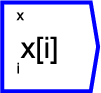
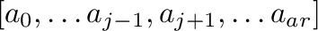
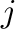
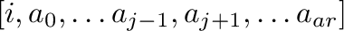
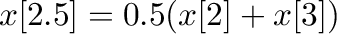

Gather collects the values at index locations of the first argument, indexed by the second argument. If the index argument is a scalar, the output tensor's rank is one less than the first argument's rank, ie

where
is the axis along which the gather is performed. If the index argument is a tensor, however, it's shape is ignored, and the output tensor is the same rank as the first argument, and has shape
where is the number of elements in the index argument's hypercube, and is the axis along which the gather is performed.
is the number of elements in the index argument's hypercube, and is the axis along which the gather is performed.
If the index is not an integer, the gather will linearly interpolate between the values on either side. So, for example,

. The x-vector elements are also linearly interpolated if the x-vector is a value or time type dimension, or the closest string label if a string type.If the index value is outside the range of the x-vector along the axis being gathered, then NAN is assigned to that tensor element, and the x-vector gets a default assigned element (empty string, NaN or not-a-date).
The operator can be placed on the canvas in two ways:
 ;
or
;
or